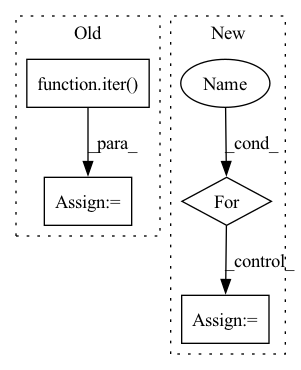

Pattern ID :34593
Before Change
data_loader = self.rafd_loader
// Fetch fixed inputs for debugging.
data_iter = iter( data_loader)
x_fixed, c_org = next(data_iter)
x_fixed = x_fixed.to(self.device)
// c_fixed_list = self.create_labels(c_org, self.c_dim, self.dataset, self.selected_attrs)
After Change
// Start training.
print("Start training...")
start_time = time.time()
for i in range(start_iters, self.num_iters):
try:
// =================================================================================== //
// 1. Preprocess input data //
// =================================================================================== //
// Fetch real images and labels.
try:
x_real, label_org = next(data_iter)
label_org = torch.unsqueeze(label_org, dim=1)
except:
data_iter = iter(self.data_loader)
x_real, label_org = next(data_iter)In pattern: SUPERPATTERN
Frequency: 4
Non-data size: 4
Instances Fragment ID: 99425213
Project Name: habout632/stargan2
Commit Name: ee158d86db0ac3b65b72abf65b8b6fe3497fe4ef
Time: 2020-03-15
Author: jifeng.yin@silknets.com
File Name: stargan2_solver.py
M Class Name: Solver
N Class Name: Solver
M Method Name: train(1)
N Method Name: train(1)
M Parent Class: object
N Parent Class: object
M File Name: stargan2_solver.py
N File Name: stargan2_solver.py
M Start Line: 464
M End Line: 729
N Start Line: 493
N End Line: 766
Before Change
num_embeddings = args.num_embeddings
// TODO add CriteoIterDataPipe support and add random_dataloader arg
iterator = iter( get_dataloader(args, backend))
eb_configs = [
EmbeddingBagConfig(
name=f"t_{feature_name}",After Change
// Sets default limits for random dataloader iterations when left unspecified.
if args.in_memory_binary_criteo_path is None:
for stage in STAGES:
attr = f"limit_{stage}_batches"
if getattr(args, attr) is None:
setattr(args, attr, 10)
Fragment ID: 99425221
Project Name: pytorch/torchrec
Commit Name: 46f6aa6a827299037c1f1827f54e929344022d87
Time: 2021-11-30
Author: rahulkindi@fb.com
File Name: torchrec/examples/dlrm/dlrm_main.py
M Class Name: AnonimousClass
N Class Name: AnonimousClass
M Method Name: main(1)
N Method Name: main(1)
M Parent Class:
N Parent Class:
M File Name: torchrec/examples/dlrm/dlrm_main.py
N File Name: torchrec/examples/dlrm/dlrm_main.py
M Start Line: 117
M End Line: 189
N Start Line: 298
N End Line: 374
Before Change
self.testloader = DataLoader(test_data, self.batch_size, drop_last=True)
self.trainloaderfull = DataLoader(train_data, self.batch_size, drop_last=False)
self.testloaderfull = DataLoader(test_data, self.batch_size, drop_last=False)
self.iter_trainloader = iter( self.trainloader)
self.iter_testloader = iter(self.testloader)
def set_parameters(self, model):After Change
// check BatchNorm
self.has_BatchNorm = False
for layer in self.model.children():
if isinstance(layer, nn.BatchNorm2d):
self.has_BatchNorm = True
break
self.train_slow = kwargs["train_slow"] Fragment ID: 99425207
Project Name: tsingz0/pfl-non-iid
Commit Name: 4f394efe04f30dbd3cab4278467631854f997903
Time: 2022-01-14
Author: 2719584131@qq.com
File Name: system/flcore/clients/clientbase.py
M Class Name: Client
N Class Name: Client
M Method Name: __init__(5)
N Method Name: __init__(11)
M Parent Class: object
N Parent Class: object
M File Name: system/flcore/clients/clientbase.py
N File Name: system/flcore/clients/clientbase.py
M Start Line: 12
M End Line: 32
N Start Line: 19
N End Line: 46